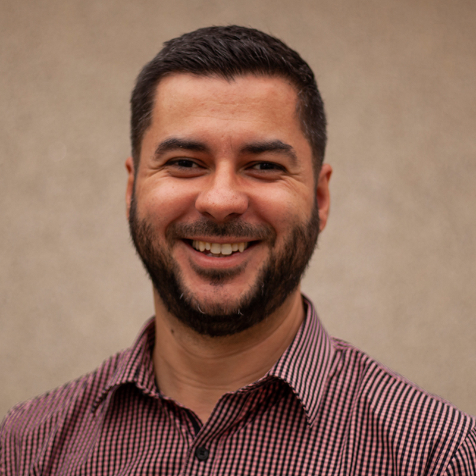

25+ years of experience on technology, project management and business processes. Constantly evolving, fast paced, self-taught, entrepreneurship mindset, remote work enthusiast.
Recent jobs:
At Optimizely, our team has enhanced the digital marketing landscape through pioneering A/B testing strategies, increasing Experimentation Programs ROI and elevating service level achievement to over 95%. My tenure as Project Manager is marked by a substantial 40% reduction in team costs and a commitment to providing exceptional processual and technical guidance.
My recent interim role at SearchTides as Director of Operations allowed us to introduce a Portfolio Management system and lay the groundwork for Client Success initiatives. Leading with a strategic mindset, we established essential SOPs across multiple departments, fostering a culture of continuous improvement and operational excellence.
Digital Experience Platform (2020 > Current)
I manage the operation of a globally distributed team, with 16 members across time zones ranging from California to Philippines. We augment Optimizely's customers' digital marketing teams by strategizing and building A/B Tests that help them improve their Experimentation Programs ROI.
I have enabled process and tools for the Rapid Experimentation department, improved SLA achievement from 50% to 95+% and reduced team cost in 40%. I also provide processual and technical guidance to all team members and clients.
SEO Marketing Agency (2024 > 2024)
As an interim role, in four months I was able to: